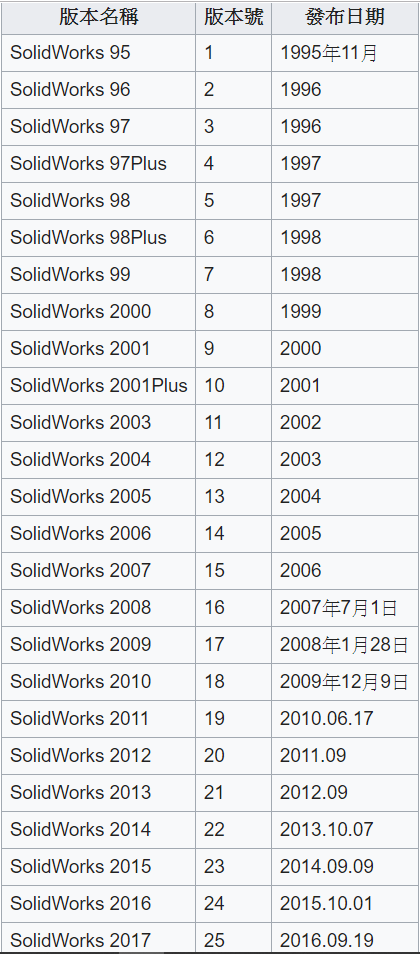
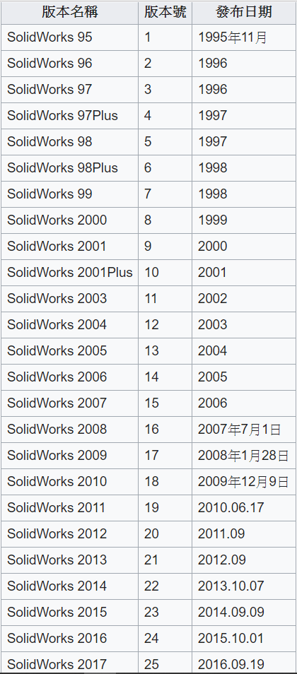

WEEK6-9 <<
Previous Next >> WEEK15-18
WEEK10-14
week10
SolidWorks公司成立於1993年12月，其總部設在美國麻州康克爾郡，西元1995年發表其第一款產品SolidWorks 95，1997年被達梭系統併購，SolidWorks公司現在是達梭系統的子公司。 

week11
week12
CH9
9.1.1創建空白頁
創建新檔案或導入原始模型，建立胚料
9.1.2設置加工環境
選擇文件→ 新建→ 製造→ 選擇想要進行的加工模式
9.1.3操作導航器
有關刀具，方法和策略的信息
9.1.4機器坐標系
設定坐標系
9.2.1創建新操作
設定新的加工程序
9.2.2工具創見與選擇
創建刀具與設定刀具參數
9.2.3工具路徑設置
選擇刀具路徑的偏差量
9.2.5切割深度
設定每次切割的深度
9.2.6切削參數
設定切削參數
9.2.7迴避
設定起刀點及座標
9.2.8速度和進給
設定主軸轉速和切削速度
9.3.1生成程序
生成加工程序
9.3.2刀具路徑顯示
開啟刀去路徑顯示以檢視
9.3.3刀具路徑模擬
舍弟完刀具路徑後進行模擬，以避免產生撞刀之類的失誤
9.3.4鑿孔檢查
驗證工具是否從工件上清除了多餘的材料
9.4.1粗加工
粗加工以較快的速度去除散裝物料
9.4.2半精加工
半精加工程序旨在消除由於粗加工引起的不均勻
9.4.3.1外部輪廓
該程序旨在將外斜牆修整到地板的底部
9.4.3.2內部輪廓
觀察到切刀從未越過修整和檢查所給定的邊界
9.4.4修整輪廓表面
修整工件輪廓並開始加工
9.5.1創建CLSF
生成並保存操作後，將生成的刀具路徑存儲為程序
9.5.2後處理
產生G碼
week13
week14
WEEK6-9 <<
Previous Next >> WEEK15-18